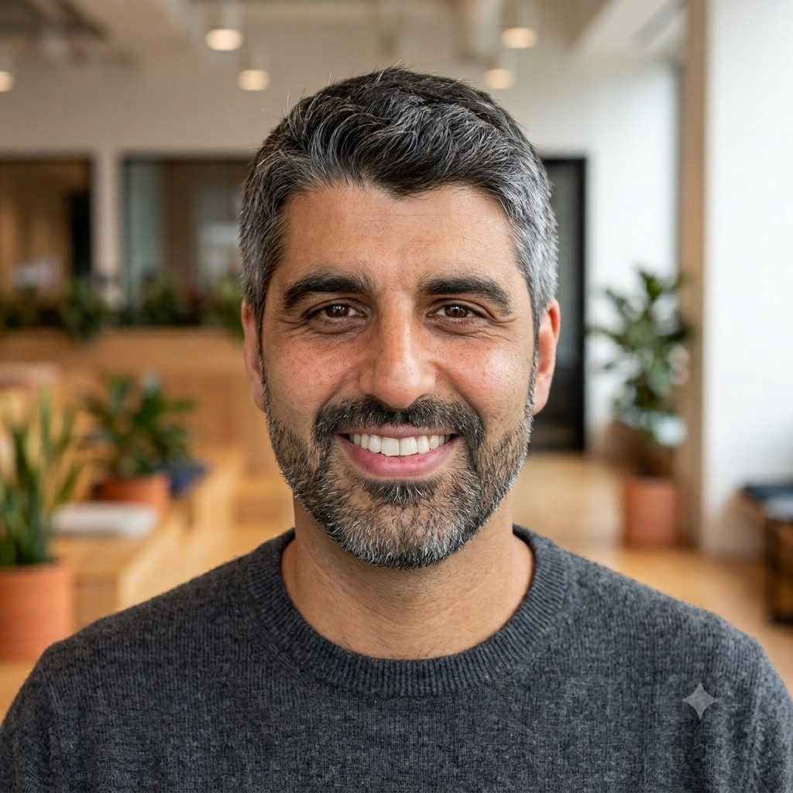

About me
A Designer focused on digital products, from concept to interface.
With 15+ years of experience across visual, web, and product design, I've worked across different companies and industries — the last five years at Globant — designing and improving digital products centered on people. I collaborate closely with multidisciplinary teams to deliver consistent, visually considered experiences.
I balance aesthetics and functionality, optimizing usability without losing sight of business goals. I stay current with design trends and best practices to deliver solutions that improve how people interact with a product.
Tools
Methodologies & focus
Soft skills
Work experience
-
Enterprise AI Data Platform
UX/UI Designer- UX/UI Designer on the Enterprise AI Data Platform, Globant's enterprise data governance platform, taking full ownership of the product's interface design across six modules.
- Beyond screen design, I helped shape the team's design process — introducing PRD-first discipline, HTML-based prototyping and systematic Mercury component usage to deliver consistent, audit-ready interfaces for both human users and AI agents.
-
Globant · Banking App — Central American Bank
Visual Designer- Strong focus on Motion Design, creating animations and micro-interactions to enhance clarity and bring interfaces to life.
- Contributed to UI screen design, ensuring visual consistency and alignment with the product's design system.
-
Globant · Ueno Bank — Loyalty Program, Paraguay
Visual Designer- Benchmarked the behaviors and visual resources used by other brands for loyalty programs.
- Proposed a library and design system with a unified look, applicable across the client's entire group of companies.
- Designed a back office as the only internal product to date that uses a multi-brand approach.
-
Globant · NBA Experience App — Intuit Dome, United States
Visual Designer- Designed attractive, functional interfaces built around an intuitive, enjoyable experience.
- Designed visual elements — icons, graphics and illustrations — that enrich usability across the product.
- Maintained visual coherence across every aspect of the design, including color, typography and image style, for a consistent, recognizable identity.
-
Globant · Multi-Brand Restaurant Platform, Spain
Visual Designer- Worked as a team to create a visually appealing, user-friendly interface aligned with the target audience's needs.
- Conducted research to understand user needs and preferences, working closely with the development team.
- Built wireframes and mockups to define layout and functionality, with Figma as the primary tool.
-
Globant · VOV Gaming Platform, Saudi Arabia
Visual Designer- Created an intuitive, visually cohesive interface that enhances the user experience.
- Researched industry best practices and defined UI components to keep consistency across the product.
-
Globant · Healthcare Platform — Google, Colombia
Visual and UX Designer- Adapted the product to native app, website and command-line experiences, following a design pattern set by the client's system.
- Interviewed stakeholders to verify guidelines and user test results.
- Built high-fidelity wireframes and mockups in Figma.
-
IOV, Argentina
UX/UI Designer (Team Leader)- Collaborated with the Marketing team to enhance communication strategies through design and UI/UX improvements.
- Branding across social networks.
-
Overactive, Uruguay
UX/UI Designer- App Education — Ceibal Kid: researched and benchmarked at the start of the design process, built low-fidelity wireframes for client flow approval, created high-fidelity mockups with Sketch and prototyped with InVision, and collaborated with the development team exporting files for build.
- App Banking — Scotiabank: created low-fidelity wireframes for client flow approval, designed in high fidelity with Sketch and built prototypes in InVision — including icon illustration following an existing library pattern — and collaborated closely with the development team.
-
Inswitch Solutions, Uruguay
Visual Designer (Team Leader)- Designed web, graphic and mobile products for clients abroad.
- Worked in HTML and CSS across different products.
- Branding.
-
Tavano Team, Uruguay
Web Designer- Created and designed ecommerce web pages.
- Adapted ecommerce web design and layout to the NetSuite platform.
-
Fira Communication, Uruguay
Graphic and Web Designer- Created designs for Conaprole packaging.
- Designed web pages for national clients such as Conaprole and Cosem, among others.
Education
- IA Heroes Pro — Learning Heroes (prompt engineering, AI tools, agents and real-world AI applications)
- Interaction Design — AI for Designers, Montevideo, Uruguay
- Udemy — Mobile UI Design, Montevideo, Uruguay
- Coder House — UI Design, Montevideo, Uruguay
- Interaction Design — Mobile UI Design, Montevideo, Uruguay
- Google — Google Adwords and Online Strategy, Montevideo, Uruguay
- Hack Academy Institute — HTML5, CSS3, JavaScript, Montevideo, Uruguay
- Foto Club Institute — Photography, Montevideo, Uruguay
- ORT University — Bachelor's Degree in Graphic Design, Montevideo, Uruguay
Languages
- Spanish — native speaker
- English — upper intermediate